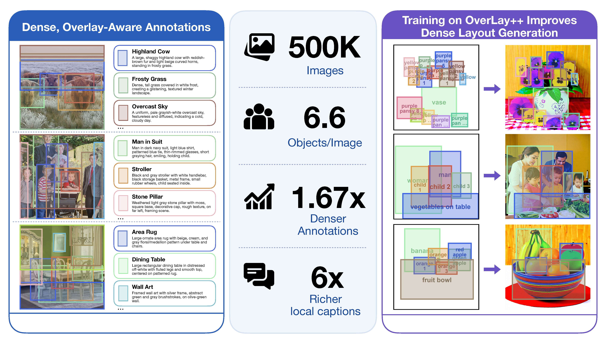
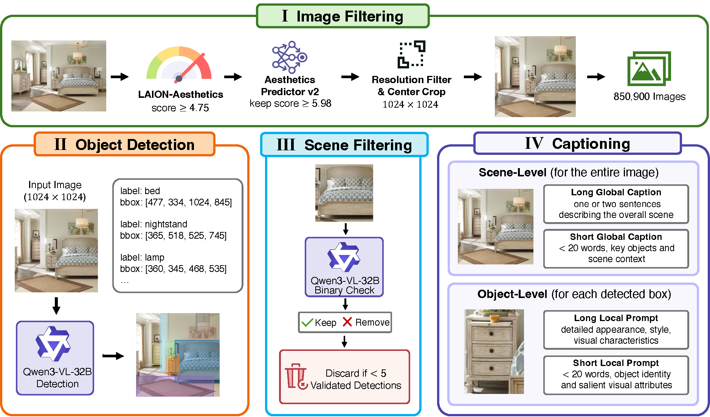
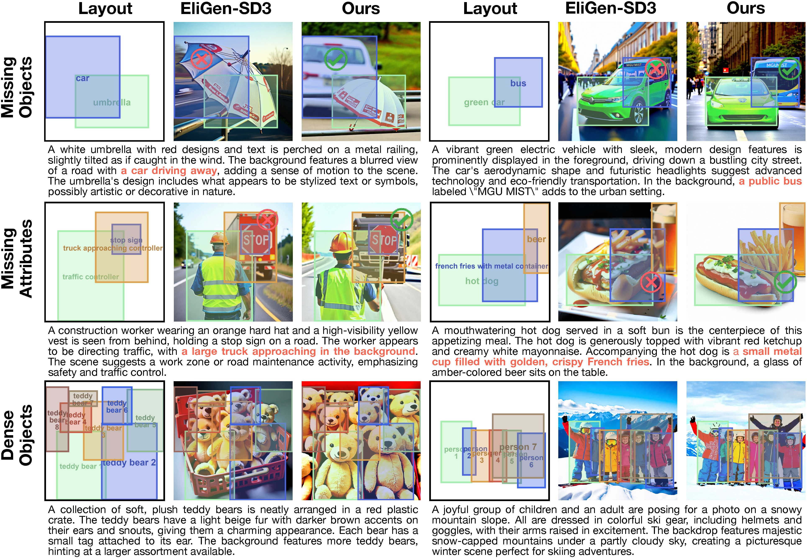
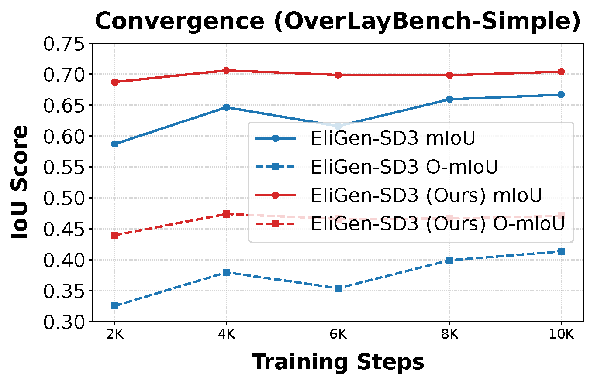
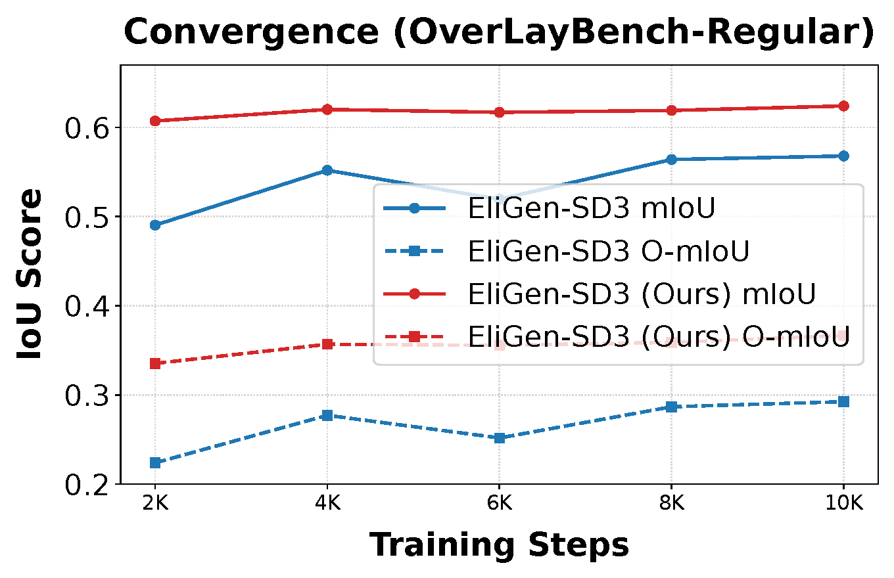
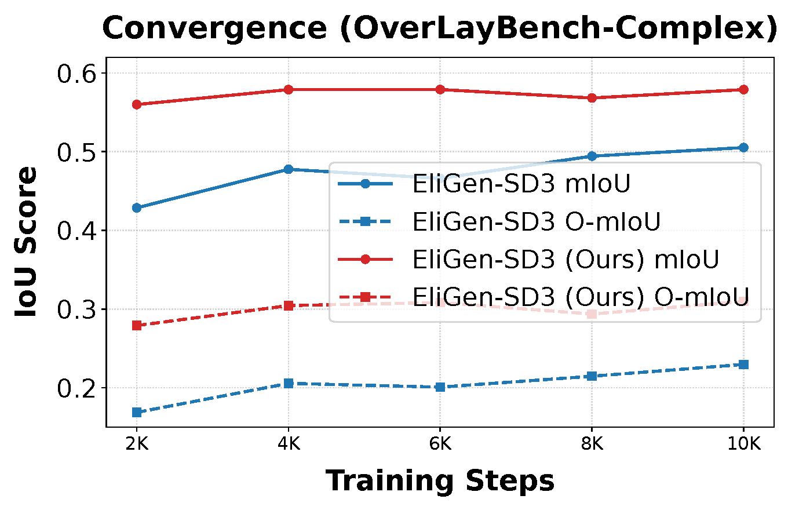

View full size ↗Layout-to-Image generation has made substantial progress in spatial and object-level control. However, existing methods still struggle with complex scenes containing many overlapping and interacting objects. We argue that training data is a particular bottleneck: existing datasets lack examples with dense, complex object interactions. To address this gap, we introduce OverLay++, a large-scale Layout-to-Image dataset with structurally complex scenes. OverLay++ contains approximately 500K images with an average of 6.6 objects per image, exceeding existing datasets by 1.67× in annotation density. Beyond annotation density, OverLay++ provides rich semantic detail with object captions over six times longer than in current datasets. Our dataset generation pipeline is simple and produces dense, overlapping object annotations with rich per-object captions. Across multiple benchmarks, state-of-the-art Layout-to-Image methods trained on the OverLay++ dataset show consistent improvement and faster convergence, demonstrating the importance of dense, overlap-aware, and caption-rich supervision for controllable image generation.
We construct OverLay++ from the LAION-Aesthetics V2 4.75 subset using a four-stage pipeline: image filtering, object detection, scene filtering, and hierarchical captioning. The pipeline prompts a vision-language model to produce overlapping object proposals, then applies per-object grounded validation to keep only accurate detections. Each retained image receives short and long captions at both the scene and object levels.

View full size ↗| Dataset | Images | Objects ↑ | IoU ↑ | Dist ↓ | Local short ↑ | Local long ↑ | Global short ↑ | Global long ↑ |
|---|---|---|---|---|---|---|---|---|
| LayoutSAM | 2.66M | 3.93 | 0.22 | 0.22 | 1.99 | 11.93 | — | 81.81 |
| EliGen | 496K | 2.56 | 0.26 | 0.24 | 2.12 | — | 17.76 | — |
| GRIT | 20.5M | 1.78 | 0.16 | 0.25 | 2.40 | — | 17.47 | — |
| OverLay++ dataset | 500K | 6.59 | 0.31 | 0.17 | 15.89 | 89.70 | 19.98 | 52.24 |
Table 1: Dataset statistics for Layout-to-Image datasets. Our dataset has higher object density, stronger spatial interactions, and richer caption supervision than prior datasets. Caption lengths are measured in number of words. Bold and underline mark the best and second-best values in each column.
Models trained on the OverLay++ dataset produce more coherent and detailed images than those trained on prior datasets.

View full size ↗On LayoutSAM-Eval, EliGen-SD3 trained on the OverLay++ dataset achieves state-of-the-art region-wise quality.
| Model | Spatial (%) ↑ | Color (%) ↑ | Texture (%) ↑ | Shape (%) ↑ | FID ↓ | IS ↑ |
|---|---|---|---|---|---|---|
| GLIGEN | 77.53 | 49.41 | 55.29 | 52.72 | 21.92 | 20.57 |
| Ranni | 41.38 | 24.10 | 25.57 | 23.35 | 27.24 | 19.81 |
| MIGC | 85.66 | 66.97 | 71.24 | 69.06 | 21.19 | 19.65 |
| InstanceDiff | 87.99 | 69.16 | 72.78 | 71.08 | 19.67 | 20.02 |
| Be Yourself | 53.99 | 31.73 | 35.26 | 32.75 | 28.10 | 17.98 |
| HiCo | 87.04 | 69.19 | 72.36 | 71.10 | 22.61 | 20.15 |
| SiamLayout-SD3 | 92.67 | 74.45 | 77.21 | 75.93 | 19.10 | 22.04 |
| SiamLayout-SD3 (OverLay++ dataset) | 93.30 (+0.68%) | 75.99 (+2.07%) | 78.77 (+2.02%) | 78.41 (+3.27%) | 17.96 (-5.97%) | 21.60 |
| EliGen-SD3 | 93.04 | 82.96 | 86.73 | 86.35 | 25.17 | 19.21 |
| EliGen-SD3 (OverLay++ dataset) | 95.45 (+2.59%) | 90.03 (+8.52%) | 93.14 (+7.39%) | 92.81 (+7.48%) | 19.61 (-22.09%) | 19.54 (+1.72%) |
Table 2: Results on LayoutSAM-Eval. Comparison of region-wise and global quality across different methods. Our methods consistently outperform their corresponding baselines, achieving substantial gains in region-wise quality while maintaining competitive global image quality. Improvements over baseline are shown in green, and bold and underline denote the best and second-best results among all compared methods.
Training on the OverLay++ dataset improves both EliGen-SD3 and SiamLayout-SD3 on OverLayBench benchmark across the Simple, Regular, and Complex splits.
| Method | mIoU ↑ | O-mIoU ↑ | SRE ↑ | SRR ↑ | CLIPG ↑ | CLIPL ↑ | FID ↓ |
|---|---|---|---|---|---|---|---|
| GLIGEN | 60.54 | 36.22 | 49.99 | 78.72 | 34.17 | 24.75 | 31.27 |
| InstanceDiff | 71.21 | 49.99 | 77.71 | 87.49 | 34.25 | 27.69 | 36.17 |
| MIGC | 58.64 | 32.15 | 63.41 | 81.60 | 33.07 | 26.49 | 31.64 |
| HiCo | 69.47 | 47.23 | 67.75 | 86.08 | 35.25 | 27.04 | 29.21 |
| 3DIS | 65.75 | 38.38 | 86.24 | 86.98 | 35.85 | 29.67 | 29.18 |
| SiamLayout-SD3 | 58.78 | 32.52 | 72.34 | 84.45 | 37.29 | 27.49 | 27.51 |
| SiamLayout-SD3 (OverLay++ dataset) | 61.01 (+3.79%) | 37.23 (+14.48%) | 75.19 (+3.94%) | 85.60 (+1.36%) | 37.03 | 27.59 (+0.36%) | 26.73 (-2.84%) |
| EliGen-SD3 | 66.67 | 41.34 | 85.70 | 88.67 | 37.01 | 28.57 | 30.29 |
| EliGen-SD3 (OverLay++ dataset) | 70.39 (+5.58%) | 47.09 (+13.91%) | 91.83 (+7.15%) | 91.06 (+2.70%) | 36.27 | 29.15 (+2.03%) | 30.28 (-0.03%) |
| Method | mIoU ↑ | O-mIoU ↑ | SRE ↑ | SRR ↑ | CLIPG ↑ | CLIPL ↑ | FID ↓ |
|---|---|---|---|---|---|---|---|
| GLIGEN | 52.46 | 26.53 | 44.88 | 77.46 | 33.93 | 23.42 | 52.22 |
| InstanceDiff | 60.08 | 34.15 | 72.51 | 83.36 | 33.09 | 26.19 | 59.73 |
| MIGC | 47.42 | 20.06 | 56.67 | 77.85 | 32.72 | 24.99 | 54.24 |
| HiCo | 55.02 | 29.60 | 58.24 | 79.89 | 33.91 | 25.34 | 49.07 |
| 3DIS | 55.66 | 27.29 | 80.80 | 83.69 | 35.42 | 28.12 | 48.56 |
| SiamLayout-SD3 | 47.04 | 20.67 | 62.60 | 78.31 | 36.67 | 25.55 | 45.57 |
| SiamLayout-SD3 (OverLay++ dataset) | 48.41 (+2.91%) | 23.32 (+12.82%) | 65.53 (+4.68%) | 80.39 (+2.66%) | 36.49 | 25.66 (+0.43%) | 45.37 (-0.44%) |
| EliGen-SD3 | 56.79 | 29.24 | 81.34 | 83.57 | 36.54 | 27.20 | 49.15 |
| EliGen-SD3 (OverLay++ dataset) | 62.40 (+9.88%) | 36.66 (+25.38%) | 89.45 (+9.97%) | 86.75 (+3.81%) | 35.64 | 28.17 (+3.57%) | 49.09 (-0.12%) |
| Method | mIoU ↑ | O-mIoU ↑ | SRE ↑ | SRR ↑ | CLIPG ↑ | CLIPL ↑ | FID ↓ |
|---|---|---|---|---|---|---|---|
| GLIGEN | 50.79 | 23.85 | 41.70 | 79.93 | 33.92 | 22.75 | 57.32 |
| InstanceDiff | 53.68 | 25.63 | 66.02 | 80.34 | 32.33 | 25.53 | 66.32 |
| MIGC | 40.04 | 13.26 | 47.80 | 74.48 | 31.93 | 24.20 | 66.52 |
| HiCo | 46.56 | 20.35 | 48.88 | 75.19 | 33.15 | 24.41 | 55.78 |
| 3DIS | 50.65 | 21.75 | 74.31 | 81.57 | 35.11 | 27.35 | 54.90 |
| SiamLayout-SD3 | 44.24 | 18.05 | 52.10 | 79.98 | 36.55 | 24.76 | 53.29 |
| SiamLayout-SD3 (OverLay++ dataset) | 45.81 (+3.55%) | 20.42 (+13.13%) | 57.54 (+10.44%) | 81.60 (+2.03%) | 36.15 | 24.97 (+0.85%) | 52.21 (-2.03%) |
| EliGen-SD3 | 50.53 | 22.97 | 73.75 | 82.22 | 36.49 | 26.32 | 53.58 |
| EliGen-SD3 (OverLay++ dataset) | 57.90 (+14.59%) | 30.99 (+34.92%) | 83.30 (+12.95%) | 85.59 (+4.10%) | 35.46 | 26.97 (+2.47%) | 53.63 |
Table 3: Results on OverLayBench. Comparison of generation quality across different methods and complexity settings. Our methods consistently outperform their corresponding baselines, achieving substantial gains in region-aware metrics while maintaining competitive overall image fidelity. Improvements over the baseline are shown in green, and bold and underline indicate the best and second-best results among all compared methods.
Training on the OverLay++ dataset improves both EliGen-SD3 and SiamLayout-SD3 on DenseLayout benchmark.
| Model | mIoU (%) ↑ | Color (%) ↑ | Texture (%) ↑ | Shape (%) ↑ |
|---|---|---|---|---|
| EliGen-SD3 | 45.79 | 37.65 | 39.98 | 39.76 |
| EliGen-SD3 (OverLay++ dataset) | 46.92 (+2.47%) | 40.61 (+7.86%) | 42.91 (+7.33%) | 42.82 (+7.70%) |
| SiamLayout-SD3 | 15.54 | 11.69 | 12.34 | 12.17 |
| SiamLayout-SD3 (OverLay++ dataset) | 17.10 (+10.04%) | 13.15 (+12.49%) | 13.77 (+11.59%) | 13.61 (+11.83%) |
Table 4: Results on DenseLayout. EliGen-SD3 and SiamLayout-SD3 trained on OverLay++ outperform their corresponding baselines on DenseLayout benchmark. Improvements over baselines are highlighted in green, and bold indicates the best results among all compared methods.
Training on the OverLay++ dataset accelerates convergence across all OverLayBench splits.



Figure 4: Convergence analysis. Comparison of mIoU and O-mIoU versus training steps for Simple, Regular, and Complex settings. The model trained on OverLay++ achieves higher scores across all difficulty levels and demonstrates stable convergence behavior.
If you find OverLay++ useful, please consider citing:
@misc{aggarwal2026overlaydenseoverlaplayouttoimagegeneration,
title={OverLay++: Dense-Overlap Layout-to-Image Generation Dataset},
author={Shivansh Aggarwal and Shresth Grover and Divyansh Srivastava and Haiyang Xu and Bingnan Li and Xiang Zhang and Ethan J. Armand and Chuan Li and Jianwen Xie and Zhuowen Tu},
year={2026},
eprint={2610.09071},
archivePrefix={arXiv},
primaryClass={cs.CV},
url={https://arxiv.org/abs/2610.09071},
}This work is supported by U.S. National Science Foundation Award IIS-2433768 and IIS-2127544. This work also used Delta and DeltaAI at National Center for Supercomputing Applications (NCSA) through allocation CIS260179 from the Advanced Cyberinfrastructure Coordination Ecosystem: Services & Support (ACCESS) program, which is supported by U.S. National Science Foundation grants #2138259, #2138286, #2138307, #2137603, and #2138296. We also thank Lambda, Inc. for their valuable compute resource help.